Лабораторная работа 3. Django Web framework. Запросы и их выполнение¶
Я создала папку для лабораторной работы 3, туда я скопирую проект практики лабораторной работы 2.
Активируем виртуальное окружение.
.\tutorial-env\Scripts\activate
Еще мне выдалось предупреждение при запуске приложения:
Django сообщает, что использует старый (ограниченный) тип ID для записей в таблицах, так как начиная с версии django 3.2 он требует явно указать современный тип id.
В конец файла settings.py добавляем DEFAULT_AUTO_FIELD = 'django.db.models.BigAutoField'
Это включит новый тип ID с огромным запасом емкости и скроет предупреждения.
Практическое занятие №3.1
Задача 1. Создание объектов
В дальнейшем все задания в этой работе будут реализовываться через интерактивный интерпретатор, запущенный посредством управляющего файла manage.py. Если же вы пользуетесь командной строкой для взаимодействия с проектом, то в папке вашей разработки для открытия интерпретатора, поддерживающего Django, нужно написать manage.py shell (для Windows) или python3 manage.py shell (для Linux)
python manage.py shell
12 objects imported automatically (use -v 2 for details).
Python 3.12.6 (tags/v3.12.6:a4a2d2b, Sep 6 2024, 20:11:23) [MSC v.1940 64 bit (AMD64)] on win32
Type "help", "copyright", "credits" or "license" for more information.
(InteractiveConsole)
>>>
Практическое задание 1. Создание объектов
Необходимо импортировать классы моделей из файла models.py:
from project_first_app.models import User, Ownership, DrivingLicence, Car
>>> from project_first_app.models import User, Ownership, DrivingLicence, Car
Реализуем создание через менеджер objects.
user1 = User.objects.create_user(username="ivan_ivanov", password="password123", first_name="Иван", last_name="Иванов", passport="11112222", home_address="ул. Ленина, д. 5", nationality="Русский", birthday="1990-05-12", sex="M")
user2 = User.objects.create_user(username="petr_petrov", password="password123", first_name="Петр", last_name="Петров", passport="33334444", home_address="пр. Просвещения, д. 12", nationality="Русский", birthday="1985-11-23", sex="M")
user3 = User.objects.create_user(username="anna_sidorova", password="password123", first_name="Анна", last_name="Сидорова", passport="55556666", home_address="ул. Пушкина, д. 8", nationality="Русская", birthday="1995-02-08", sex="F")
user4 = User.objects.create_user(username="dmitry_kuznetsov", password="password123", first_name="Дмитрий", last_name="Кузнецов", passport="77778888", home_address="ул. Чехова, д. 45", nationality="Русский", birthday="1988-08-30", sex="M")
user5 = User.objects.create_user(username="elena_popova", password="password123", first_name="Елена", last_name="Попова", passport="99990000", home_address="ул. Гагарина, д. 3", nationality="Русская", birthday="1992-04-15", sex="F")
user6 = User.objects.create_user(username="sergey_smirnov", password="password123", first_name="Сергей", last_name="Смирнов", passport="12345678", home_address="Невский пр., д. 100", nationality="Русский", birthday="1983-09-01", sex="M")
user7 = User.objects.create_user(username="olga_fedorova", password="password123", first_name="Ольга", last_name="Федорова", passport="87654321", home_address="ул. Садовая, д. 21", nationality="Русская", birthday="1997-12-19", sex="F")
Посмотрим теперь через DB Browser, что все создалось успешно.
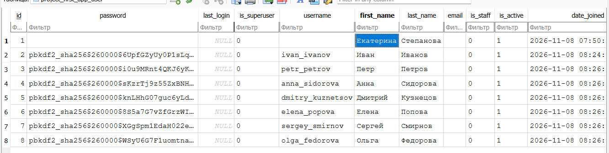
Или запустим наше приложение и посмотрим список через него
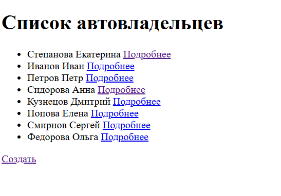
2) Напишем запрос на создание 5-6 автомобилей
car1 = Car.objects.create(license_plate="А123АА77", brand="Toyota", model="Camry", color="Черный")
car2 = Car.objects.create(license_plate="В456ВВ99", brand="BMW", model="X5", color="Белый")
car3 = Car.objects.create(license_plate="Е789ЕЕ178", brand="Lada", model="Vesta", color="Серый")
car4 = Car.objects.create(license_plate="К012КК799", brand="Hyundai", model="Solaris", color="Синий")
car5 = Car.objects.create(license_plate="М345ММ777", brand="Mercedes", model="E-Class", color="Золотой")
car6 = Car.objects.create(license_plate="О678ОО98", brand="Kia", model="Rio", color="Красный")
Посмотрим теперь через DB Browser, что все создалось успешно.
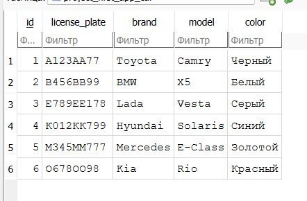
Или запустим наше приложение и посмотрим список через него
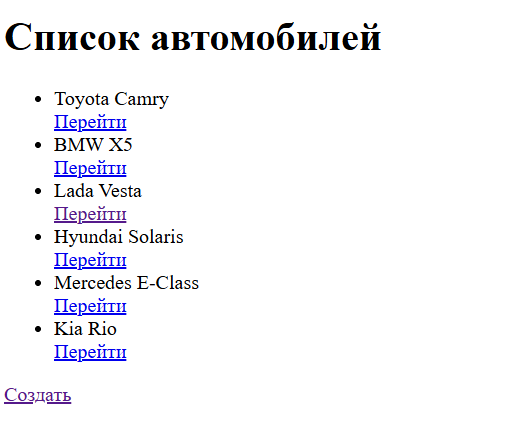
3) Каждому автовладельцу назначьте удостоверение и от 1 до 3 автомобилей. Задание можете выполнить либо в интерактивном режиме интерпретатора, либо в отдельном python-файле. Результатом должны стать запросы и отображение созданных объектов.
Если вы добавляете автомобили владельцу через метод .add(), не забудьте заполнить также ассоциативную сущность «владение».
Для удобства я создам файл.
Создаем файл run_fill.py в корневом каталоге нашего проекта.
Затем запускаем его в терминале.
python run_fill.py
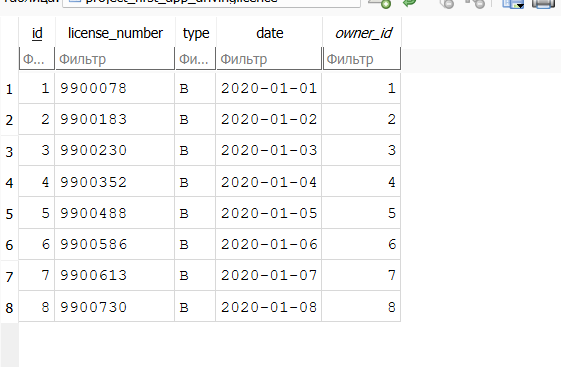
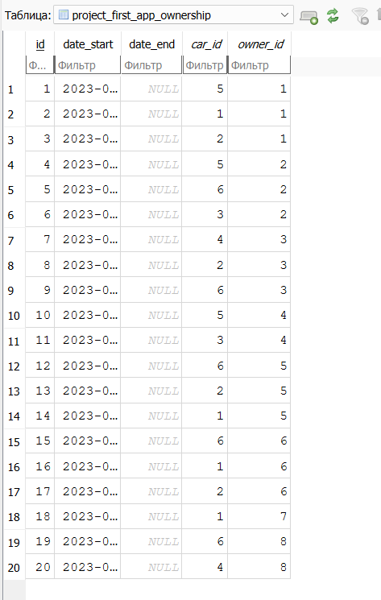
Т.е. в run_fill.py, были также выполнены запросы через objects.
Ownership.objects.get_or_create(owner=user, car=car, defaults={"date_start": date(2023, 5, 1)})
DrivingLicence.objects.get_or_create(owner=user, defaults={"license_number": f"9900{i}{random.randint(10, 99)}", "type": "B", "date": date(2020, 1, 1)})
Задача 2. Создание простых запросов на фильтрацию
1) Добавим, где необходимо related_name к полям модели
Вот, например, для DrivingLicence
class DrivingLicence(models.Model):
owner = models.ForeignKey(User, on_delete=models.CASCADE, related_name='license')
license_number = models.CharField(max_length=10)
type = models.CharField(max_length=10)
date = models.DateField()
def __str__(self):
return f"Права {self.license_number} ({self.owner.last_name})"
2) Выведем все марки "Toyota"
Car.objects.filter(brand="Toyota")
<QuerySet [<Car: Автомобиль Toyota с номером А123АА77>]>
3) Найдите всех водителей с именем «Елена» (или любым другим именем на ваше усмотрение).
>>> User.objects.filter(first_name="Елена")
<QuerySet [<User: Попова Елена>]>
4) Взяв любого случайного владельца, получите его id, и по этому id получите экземпляр удостоверения в виде объекта модели (можно в 2 запроса).
4.1) Возьму случайного владельца
Воспользуюсь функцией get(), чтобы получить сразу же конкретную запись
>>> user = User.objects.get(first_name='Иван')
>>> user
<User: Иванов Иван>
>>> user_id = user.id
>>> user_id
2
>>> DrivingLicence.objects.get(owner_id=user_id)
<DrivingLicence: Права 9900183 (Иванов)>
5) Выведите всех владельцев красных машин (или любого другого цвета, который у вас присутствует).
>>> User.objects.filter(ownerships__car__color="Красный")
<QuerySet [<User: Иванов Иван>, <User: Петров Петр>, <User: Кузнецов Дмитрий>, <User: Попова Елена>, <User: Федорова Ольга>]>
>>> User.objects.filter(cars__color="Красный")
<QuerySet [<User: Иванов Иван>, <User: Петров Петр>, <User: Кузнецов Дмитрий>, <User: Попова Елена>, <User: Федорова Ольга>]>
>>>
6) Найдите всех владельцев, чей год владения машиной начинается с 2010 (или любой другой год, который присутствует у вас в базе).
Related_name теория: https://django.fun/qa/30927/
Посмотрю в начале, какие года есть
>>> Ownership.objects.values_list('date_start__year', flat=True)
<QuerySet [2023, 2023, 2023, 2023, 2023, 2023, 2023, 2023, 2023, 2023, 2023, 2023, 2023, 2023, 2023, 2023, 2023, 2023, 2023, 2023]>
User.objects.filter(ownerships__date_start__year=2023).distinct()
<QuerySet [<User: Степанова Екатерина>, <User: Иванов Иван>, <User: Петров Петр>, <U
ser: Сидорова Анна>, <User: Кузнецов Дмитрий>, <User: Попова Елена>, <User: Смирнов Сергей>, <User: Федорова Ольга>]>
Задача 3. Агрегация и аннотация запросов
Чтобы использовать функции аннотации и агрегации, нужно их импортировать
from django.db.models import Max, Min, Avg, Count
1) Вывод даты выдачи самого старшего водительского удостоверения.
DrivingLicence.objects.aggregate(Max("date"))
{'date__max': datetime.date(2020, 1, 8)}
Т.е. дата самого старшего удостоверения приходится на 8 января 2020 года.
Ради интереса посмотрю вообще какие даты есть.
>>> DrivingLicence.objects.values_list('date', flat=True)
<QuerySet [datetime.date(2020, 1, 1), datetime.date(2020, 1, 2), datetime.date(2020,
1, 3), datetime.date(2020, 1, 4), datetime.date(2020, 1, 5), datetime.date(2020, 1, 6), datetime.date(2020, 1, 7), datetime.date(2020, 1, 8)]>
2) Укажите самую позднюю дату владения машиной, имеющей какую-то из существующих моделей в вашей базе.
Сначала посмотрю даты владения. Я так поняла по заданию интересуются именно датой начала владения.
! flat = True распаковывает результат и возвращает плоский список из чистых значений, вместо кортежа
>>> Ownership.objects.values_list('date_start', flat=True)
<QuerySet [datetime.date(2023, 5, 1), datetime.date(2023, 5, 1), datetime.date(2023,
5, 1), datetime.date(2023, 5, 1), datetime.date(2023, 5, 1), datetime.date(2023, 5,
1), datetime.date(2023, 5, 1), datetime.date(2023, 5, 1), datetime.date(2023, 5, 1)
, datetime.date(2023, 5, 1), datetime.date(2023, 5, 1), datetime.date(2023, 5, 1), d
atetime.date(2023, 5, 1), datetime.date(2023, 5, 1), datetime.date(2023, 5, 1), date
time.date(2023, 5, 1), datetime.date(2023, 5, 1), datetime.date(2023, 5, 1), datetime.date(2023, 5, 1), datetime.date(2023, 5, 1)]>
а вот вывод если flat = False
>>> Ownership.objects.values_list('date_start', flat=False)
<QuerySet [(datetime.date(2023, 5, 1),), (datetime.date(2023, 5, 1),), (datetime.dat
e(2023, 5, 1),), (datetime.date(2023, 5, 1),), (datetime.date(2023, 5, 1),), (dateti
me.date(2023, 5, 1),), (datetime.date(2023, 5, 1),), (datetime.date(2023, 5, 1),), (
datetime.date(2023, 5, 1),), (datetime.date(2023, 5, 1),), (datetime.date(2023, 5, 1
),), (datetime.date(2023, 5, 1),), (datetime.date(2023, 5, 1),), (datetime.date(2023
, 5, 1),), (datetime.date(2023, 5, 1),), (datetime.date(2023, 5, 1),), (datetime.dat
e(2023, 5, 1),), (datetime.date(2023, 5, 1),), (datetime.date(2023, 5, 1),), (datetime.date(2023, 5, 1),)]>
>>> Ownership.objects.aggregate(Max('date_start')
... )
{'date_start__max': datetime.date(2023, 5, 1)}
>>> Ownership.objects.values_list('date_start', flat=False)
<QuerySet [(datetime.date(1999, 6, 15),), (datetime.date(2025, 3, 20),), (datetime.d
ate(2026, 11, 1),), (datetime.date(2023, 5, 1),), (datetime.date(2023, 5, 1),), (dat
etime.date(2023, 5, 1),), (datetime.date(2023, 5, 1),), (datetime.date(2023, 5, 1),)
, (datetime.date(2023, 5, 1),), (datetime.date(2023, 5, 1),), (datetime.date(2023, 5
, 1),), (datetime.date(2023, 5, 1),), (datetime.date(2023, 5, 1),), (datetime.date(2
023, 5, 1),), (datetime.date(2023, 5, 1),), (datetime.date(2023, 5, 1),), (datetime.
date(2023, 5, 1),), (datetime.date(2023, 5, 1),), (datetime.date(2023, 5, 1),), (datetime.date(2023, 5, 1),)]>
3) Выведите количество машин для каждого водителя.
>>> User.objects.values('id', 'username').annotate(Count("cars"))
<QuerySet [{'id': 1, 'username': '', 'cars__count': 3}, {'id': 4, 'username': 'anna_
sidorova', 'cars__count': 2}, {'id': 5, 'username': 'dmitry_kuznetsov', 'cars__count
': 3}, {'id': 6, 'username': 'elena_popova', 'cars__count': 3}, {'id': 2, 'username'
: 'ivan_ivanov', 'cars__count': 3}, {'id': 8, 'username': 'olga_fedorova', 'cars__co
unt': 2}, {'id': 3, 'username': 'petr_petrov', 'cars__count': 3}, {'id': 7, 'username': 'sergey_smirnov', 'cars__count': 1}]>
4) Подсчитайте количество машин для каждой марки
>>> Car.objects.values('brand').annotate(Count('id'))
<QuerySet [{'brand': 'BMW', 'id__count': 1}, {'brand': 'Hyundai', 'id__count': 1}, {
'brand': 'Kia', 'id__count': 1}, {'brand': 'Lada', 'id__count': 1}, {'brand': 'Mercedes', 'id__count': 1}, {'brand': 'Toyota', 'id__count': 1}]>
>>>
Добавим еще одну машину марки Toyota и повторно проверим.
>>> Car.objects.values_list('brand').annotate(Count('id'))
<QuerySet [('BMW', 1), ('Hyundai', 1), ('Kia', 1), ('Lada', 1), ('Mercedes', 1), ('Toyota', 2)]>
5) Отсортируйте всех автовладельцев по дате выдачи удостоверения. (Примечание: чтобы не выводить несколько раз одни и те же записи, воспользуйтесь методом .distinct().
>>> User.objects.order_by('license__date')
<QuerySet [<User: Степанова Екатерина>, <User: Иванов Иван>, <User: Петров Петр>, <U
ser: Сидорова Анна>, <User: Кузнецов Дмитрий>, <User: Попова Елена>, <User: Смирнов Сергей>, <User: Федорова Ольга>]>
>>> User.objects.order_by('license__date').distinct()
<QuerySet [<User: Степанова Екатерина>, <User: Иванов Иван>, <User: Петров Петр>, <U
ser: Сидорова Анна>, <User: Кузнецов Дмитрий>, <User: Попова Елена>, <User: Смирнов Сергей>, <User: Федорова Ольга>]>
Чтобы дополнительно вывести даты воспользуемся .values(), он будет работать как join
>>> User.objects.order_by('license__date').distinct().values('last_name', 'first_name', 'license__date')
<QuerySet [{'last_name': 'Степанова', 'first_name': 'Екатерина', 'license__date': da
tetime.date(2020, 1, 1)}, {'last_name': 'Иванов', 'first_name': 'Иван', 'license__da
te': datetime.date(2020, 1, 2)}, {'last_name': 'Петров', 'first_name': 'Петр', 'lice
nse__date': datetime.date(2020, 1, 3)}, {'last_name': 'Сидорова', 'first_name': 'Анн
а', 'license__date': datetime.date(2020, 1, 4)}, {'last_name': 'Кузнецов', 'first_na
me': 'Дмитрий', 'license__date': datetime.date(2020, 1, 5)}, {'last_name': 'Попова',
'first_name': 'Елена', 'license__date': datetime.date(2020, 1, 6)}, {'last_name': '
Смирнов', 'first_name': 'Сергей', 'license__date': datetime.date(2020, 1, 7)}, {'las
t_name': 'Федорова', 'first_name': 'Ольга', 'license__date': datetime.date(2020, 1, 8)}]>
Практическое занятие №3.2
Утановим Django REST Framework (DRF) для создания API.
pip install djangorestframework
Теперь всё готово для того, чтобы создать ваш первый DRF API.
Для этого нам нужно создать проект Django для работы. Для этого мы запустим следующую команду:
django-admin startproject warriors_project
Создам теперь приложение
python manage.py startapp warriors_app
Добавим приложение в settings.py INSTALLED_APPS
INSTALLED_APPS = [
'django.contrib.admin',
'django.contrib.auth',
'django.contrib.contenttypes',
'django.contrib.sessions',
'django.contrib.messages',
'django.contrib.staticfiles',
'rest_framework',
'warriors_app'
]
Прописываем модели в models и проводим миграции.
python -m pip install djangorestframework
Попробуем запустить сервер.
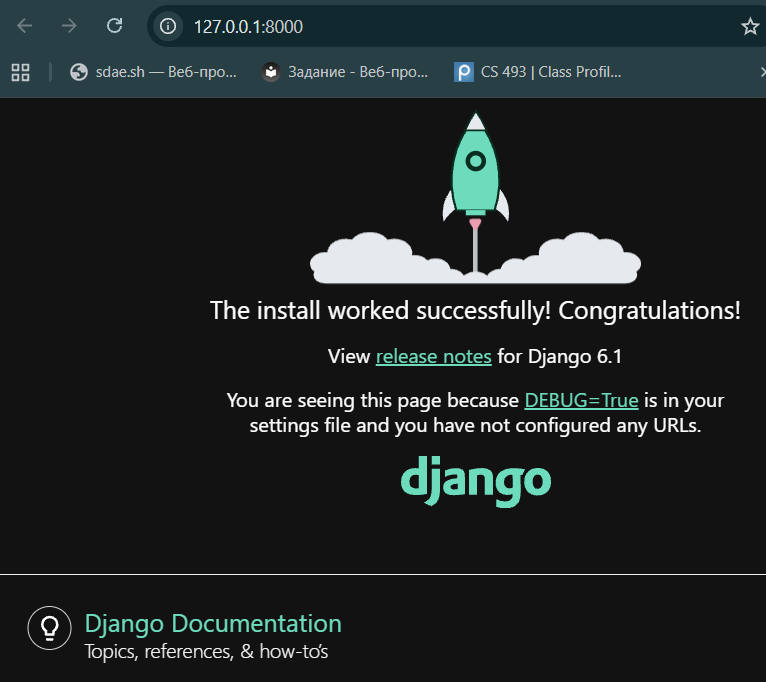
Все успешно!
Представления на основе APIView.
В первую очередь необходимо реализовать метод для просмотра всех воинов. Для этого в файле warriors_app/views.py необходимо реализовать следующий код:
class WarriorAPIView(APIView):
def get(self, request):
warriors = Warrior.objects.all()
serializer = WarriorSerializer(warriors, many=True)
return Response({"Warriors": serializer.data})
Далее необходимо настроить сериализацию данных из Django к формату JSON. Для этого необходимо создать файл serializers.py и настроить в нём работу сериализаторов. Используемые в файле контроллеров сериализаторы необходимо импортировать в файл views.py.
from rest_framework import serializers
from .models import *
class WarriorSerializer(serializers.ModelSerializer):
class Meta:
model = Warrior
fields = "__all__"
Далее необходимо создать URL-адрес, с которого пользователь сможет получить доступ к этому методу.
Необходимо создать файл warriors_app/urls.py и вставить следующий код:
from django.urls import path
from .views import *
app_name = "warriors_app"
urlpatterns = [
path('/warriors/', WarriorAPIView.as_view()),
]
Необходимо импортировать url-файл приложения в проект. В папке проекта изменить файл urls.py:
urlpatterns = [
path('admin/', admin.site.urls),
path('war/', include('warriors_app.urls')),
]
Запустим и посмотрим на результат
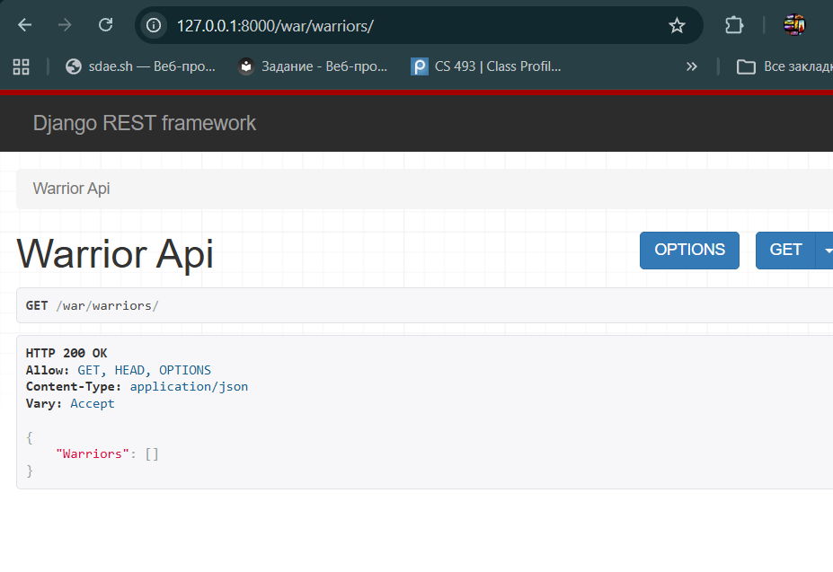
HTTP 200 OK — сервер работает корректно, запрос выполнен успешно.
JSON-ответ — в теле ответа пришел объект, внутри которого ключ "Warriors" указывает на пустые квадратные скобки []
Это означает, что сам API-эндпоинт /war/warriors/ настроен и работает правильно, но в базе данных проекта Django сейчас нет ни одной записи о воинах (warriors)
На данный момент реализован API, через который можно просматривать информацию обо всех воинах в базе данных.
В примере выше был рассмотрен метод GET, позволяющий получить данные. Далее рассмотрен метод POST, позволяющий отправить данные на сервер.
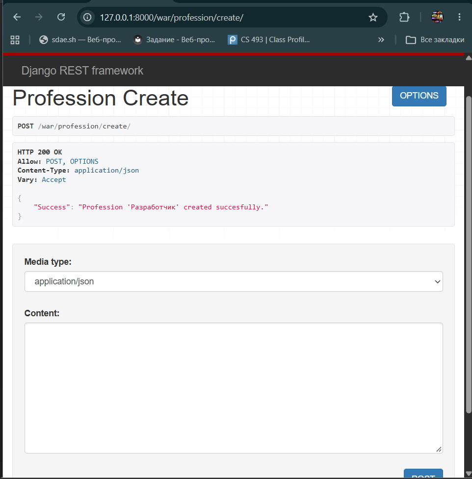
Я создала запись
{
"profession": {
"title": "Разработчик",
"description": "Пишет код на Python и Django, создавая мощные веб-приложения"
}
}
Практика
Реализовать эндпоинты для добавления и просмотра скилов методом, описанным в пункте выше.
Используем модель skill
class Skill(models.Model):
"""
Описание умений
"""
title = models.CharField(max_length=120, verbose_name='Наименование')
def __str__(self):
return self.title
```
1) Сделаю в начале добавление post, чтобы было на что смотреть при методе get
if serializer.is_valid(raise_exception=True):
skill_saved = serializer.save()
return Response({"Success": "Skill '{}' created succesfully.".format(skill_saved.title)})
class SkillCreateSerializer(serializers.ModelSerializer): class Meta: model = Skill fields = "all"
Вот получившийся вариант, протестируем его в нашем приложении.
Только перед этим необходимо прописать пути urls.
`path('skill/create/', SkillCreateView.as_view()),`


Дополнительно добавлю еще навыки, чтобы вывод казался информативнее
2) Теперь реализуем get() - просмотр всех скиллов
class SkillSerializer(serializers.ModelSerializer): class Meta: model = Skill fields = "all"
Пропишем путь в urls.
`path('skills/', SkillAPIView.as_view()),`

### Сериализация
Сериализация — это процесс перевода какой-либо структуры данных в последовательность битов.
В зависимости от применяемого набора правил на выходе получается некая текстовая строка, которая будет оформлена по каким-то правилам. Этот набор правил называется форматом.
Главное отличие между serializers.Serializer и serializers.ModelSerializer заключается в уровне автоматизации работы с базой данных: базовый Serializer требует ручного описания каждого поля, всех правил валидации и самостоятельной реализации методов сохранения (create и update), дублируя тем самым структуру из models.py, тогда как ModelSerializer автоматически генерирует поля и стандартную логику сохранения на основе указанной модели Django, что значительно сокращает объем кода и ускоряет разработку типовых CRUD-эндпоинтов.
### Практическое задание
Реализовать эндпоинты:
1) Вывод полной информации о всех воинах и их профессиях (в одном запросе).
Чтобы реализовать вывод всех воинов вместе с их профессиями в одном запросе, нужно связать два сериализатора(сделать один вложенный в другой) и создать для них представление на базе ListApiView.
class Meta:
model = Warrior
fields = ["id", "name", "race", "level", "profession"]
class WarriorProfessionListView(generics.ListAPIView): serializer_class = WarriorProfessionSerializer queryset = Warrior.objects.all()
Добавим маршрут в urls.py
path('warriors/professions/', WarriorProfessionListView.as_view()
Сейчас выдается пустота, потому что данные не заполнены, я их быстро заполню с помощью админ-панели, но для начала нада зарегистрировать модели в admin.py
admin.site.register(Warrior) admin.site.register(Profession) admin.site.register(Skill) admin.site.register(SkillOfWarrior)

2) Вывод полной информации о всех воинах и их скилах (в одном запросе).
Будем действовать по аналогии.
skill = models.ManyToManyField('Skill', verbose_name='Умения', through='SkillOfWarrior')
Благодаря этой строчке в models.py. Таблица SkillOfWarrior работает как «мост» между воинами и умениями, храня пары их ID. Когда сериализатор запрашивает поле skill, Django сам находит все нужные связи в этой промежуточной таблице и подтягивает готовые названия умений для каждого воина.

3) Вывод полной информации о воине (по id), его профессиях и скилах.
class Meta:
model = Warrior
fields = "__all__"
class WarriorSkillProfessionListView(generics.ListAPIView): serializer_class = WarriorSkillProfessionSerializer queryset = Warrior.objects.all()

4) Удаление воина по id.
Для удаления будем использовать generic-метод DestroyAPIView.
DestroyAPIView — используется для эндпоинтов только для удаления одного экземпляра модели. Предоставляет delete-обработчик метода. Расширяется: GenericAPIView, DestroyModelMixin.


Удалили война с id 1, остался воин с id 2.
Но было неудобно, что при удалении нне видишь информацию о войне, можно случайно самостоятельно удалить не тот объект.
Для предпросмотра и удаления в Django REST Framework вместо DestroyAPIView используют класс generics.RetrieveDestroyAPIView
- Предпросмотр (Retrieve). При открытии ссылки срабатывает метод GET, и сервер показывает полную анкету бойца. Вы точно видите имя, уровень, профессию и скиллы того, кого собираетесь удалить.
- Удаление (Destroy). Сверху справа остаётся красная кнопка DELETE, которая удаляет этого воина из базы.
RetrieveDestroyAPIView — используется для чтения или удаления одного экземпляра модели. Предоставляет get и delete обработчики методов. Расширяется: GenericAPIView, RetrieveModelMixin, DestroyModelMixin.
Попробуем удалить война с id 2.

Отлично, сразу вижу информацию об удаляемом войне.

Последний доступный воин удален.
5) Редактирование информации о воине.
Создам через админ панель воина.
Буду использоввать его RetrieveUpdateDestroyAPIView — используется для чтения-записи-удаления одного экземпляра модели. Обеспечивает get, put, patch и delete обработчики методов. Расширяется: GenericAPIView, RetrieveModelMixin, UpdateModelMixin, DestroyModelMixin.
Так как намного нагляднее.

Давайте поменяем имя Витьку на Виктор.


Я еще заметила, что например в поле профессия, у меня он отображает в виде объектов и их номеров, чтобы это исправить необходимо, добавить метод def __str__()
# Добавляем этот метод:
def __str__(self):
return self.title
# Реализация лабораторной работы
Для начала я повторю все действия с созданием проекта и приложения, далее мне необходимо описать модели моей базы данных, схему которой я создавала ранее и выполнить миграции.
1) Реализовать модель базы данных средствами Django ORM.
```commandline
from django.db import models
from django.db import models
class CompanyType(models.Model):
company_type_id = models.AutoField(primary_key=True)
type_name = models.CharField(max_length=20, verbose_name="Тип компании")
def __str__(self):
return self.type_name
class Company(models.Model):
company_id = models.AutoField(primary_key=True)
company_name = models.CharField(max_length=255, verbose_name="Название компании")
company_type = models.ForeignKey(
CompanyType,
on_delete=models.CASCADE,
related_name="companies",
verbose_name="Тип компании"
)
def __str__(self):
return self.company_name
class AircraftType(models.Model):
aircraft_type_id = models.AutoField(primary_key=True)
model = models.CharField(max_length=50, verbose_name="Модель")
manufacturer_name = models.CharField(max_length=50, verbose_name="Производитель")
description = models.CharField(max_length=255, null=True, blank=True, verbose_name="Описание")
def __str__(self):
return f"{self.manufacturer_name} {self.model}"
class Aircraft(models.Model):
aircraft_id = models.AutoField(primary_key=True)
aircraft_register_number = models.CharField(max_length=15, verbose_name="Бортовой номер")
aircraft_type = models.ForeignKey(
AircraftType,
on_delete=models.CASCADE,
related_name="aircrafts",
verbose_name="Тип воздушного судна"
)
seat_count = models.IntegerField(verbose_name="Количество мест")
flight_speed = models.DecimalField(
max_digits=8, decimal_places=2, null=True, blank=True, verbose_name="Крейсерская скорость"
)
technical_status = models.CharField(max_length=20, null=True, blank=True, verbose_name="Техническое состояние")
company = models.ForeignKey(
Company,
on_delete=models.CASCADE,
related_name="aircrafts",
verbose_name="Авиакомпания"
)
def __str__(self):
return f"{self.aircraft_register_number} ({self.aircraft_type.model})"
class Country(models.Model):
country_id = models.AutoField(primary_key=True)
country_name = models.CharField(max_length=100, null=True, blank=True, verbose_name="Страна")
def __str__(self):
return self.country_name or f"Country #{self.country_id}"
class City(models.Model):
city_id = models.AutoField(primary_key=True)
city_name = models.CharField(max_length=100, null=True, blank=True, verbose_name="Город")
country = models.ForeignKey(
Country,
on_delete=models.CASCADE,
related_name="cities",
verbose_name="Страна"
)
def __str__(self):
return self.city_name or f"City #{self.city_id}"
class Airport(models.Model):
airport_id = models.AutoField(primary_key=True)
airport_name = models.CharField(max_length=200, null=True, blank=True, verbose_name="Название аэропорта")
city = models.ForeignKey(
City,
on_delete=models.CASCADE,
related_name="airports",
verbose_name="Город"
)
company = models.ForeignKey(
Company,
on_delete=models.CASCADE,
related_name="airports",
verbose_name="Управляющая компания"
)
def __str__(self):
return self.airport_name or f"Airport #{self.airport_id}"
class Route(models.Model):
route_id = models.AutoField(primary_key=True)
departure_point = models.ForeignKey(
Airport,
on_delete=models.CASCADE,
related_name="departure_routes",
verbose_name="Аэропорт вылета"
)
destination_point = models.ForeignKey(
Airport,
on_delete=models.CASCADE,
related_name="destination_routes",
verbose_name="Аэропорт назначения"
)
distance = models.DecimalField(
max_digits=10, decimal_places=2, null=True, blank=True, verbose_name="Дистанция (км)"
)
def __str__(self):
return f"{self.departure_point} -> {self.destination_point}"
class Employee(models.Model):
employee_id = models.AutoField(primary_key=True)
full_name = models.CharField(max_length=255, verbose_name="ФИО")
birth_date = models.DateTimeField(verbose_name="Дата рождения")
education = models.CharField(max_length=200, null=True, blank=True, verbose_name="Образование")
work_experience = models.IntegerField(null=True, blank=True, verbose_name="Стаж работы (лет)")
passport = models.CharField(max_length=10, verbose_name="Паспорт")
company = models.ForeignKey(
Company,
on_delete=models.CASCADE,
related_name="employees",
verbose_name="Компания"
)
start_date = models.DateField(null=True, blank=True, verbose_name="Дата приёма")
end_date = models.DateField(null=True, blank=True, verbose_name="Дата увольнения")
employment_status = models.CharField(max_length=30, null=True, blank=True, verbose_name="Статус занятости")
def __str__(self):
return self.full_name
class Position(models.Model):
position_id = models.AutoField(primary_key=True)
position_name = models.CharField(max_length=100, null=True, blank=True, verbose_name="Должность")
def __str__(self):
return self.position_name or f"Position #{self.position_id}"
class Crew(models.Model):
crew_id = models.AutoField(primary_key=True)
crew_name = models.CharField(max_length=30, null=True, blank=True, verbose_name="Название экипажа")
members = models.ManyToManyField(
Employee,
through="CrewMember",
related_name="crews",
verbose_name="Члены экипажа"
)
def __str__(self):
return self.crew_name or f"Crew #{self.crew_id}"
class CrewMember(models.Model):
crew = models.ForeignKey(Crew, on_delete=models.CASCADE, verbose_name="Экипаж")
employee = models.ForeignKey(Employee, on_delete=models.CASCADE, verbose_name="Сотрудник")
position = models.ForeignKey(Position, on_delete=models.CASCADE, verbose_name="Должность в экипаже")
class Meta:
constraints = [
models.UniqueConstraint(fields=["crew", "employee"], name="unique_crew_employee")
]
def __str__(self):
return f"{self.employee.full_name} — {self.position.position_name} ({self.crew.crew_name})"
class Flight(models.Model):
flight_id = models.AutoField(primary_key=True)
flight_number = models.CharField(max_length=10, verbose_name="Номер рейса")
route = models.ForeignKey(
Route,
on_delete=models.CASCADE,
related_name="flights",
verbose_name="Маршрут"
)
aircraft = models.ForeignKey(
Aircraft,
on_delete=models.CASCADE,
related_name="flights",
verbose_name="Воздушное судно"
)
crew = models.ForeignKey(
Crew,
on_delete=models.CASCADE,
related_name="flights",
verbose_name="Экипаж"
)
departure_datetime = models.DateTimeField(null=True, blank=True, verbose_name="Время вылета")
arrival_datetime = models.DateTimeField(null=True, blank=True, verbose_name="Время прилёта")
sold_tickets = models.IntegerField(null=True, blank=True, verbose_name="Продано билетов")
admitted_employees = models.ManyToManyField(
Employee,
through="Admission",
related_name="admitted_flights",
verbose_name="Допущенные сотрудники"
)
def __str__(self):
return f"Рейс {self.flight_number} ({self.route})"
class TransitStop(models.Model):
transit_stop_id = models.AutoField(primary_key=True)
flight = models.ForeignKey(
Flight,
on_delete=models.CASCADE,
related_name="transit_stops",
verbose_name="Рейс"
)
airport = models.ForeignKey(
Airport,
on_delete=models.CASCADE,
related_name="transit_stops",
verbose_name="Аэропорт пересадки"
)
arrival_datetime = models.DateTimeField(null=True, blank=True, verbose_name="Время прибытия")
departure_datetime = models.DateTimeField(null=True, blank=True, verbose_name="Время отправления")
stop_number = models.IntegerField(null=True, blank=True, verbose_name="Порядковый номер остановки")
def __str__(self):
return f"Остановка #{self.stop_number} рейса {self.flight.flight_number} в {self.airport}"
class Admission(models.Model):
flight = models.ForeignKey(Flight, on_delete=models.CASCADE, verbose_name="Рейс")
employee = models.ForeignKey(Employee, on_delete=models.CASCADE, verbose_name="Сотрудник")
admission_status = models.BooleanField(verbose_name="Статус допуска")
admission_date = models.DateField(null=True, blank=True, verbose_name="Дата выдачи допуска")
admission_until = models.DateField(null=True, blank=True, verbose_name="Действителен до")
class Meta:
constraints = [
models.UniqueConstraint(fields=["flight", "employee"], name="unique_flight_employee_admission")
]
def __str__(self):
return f"Допуск {self.employee.full_name} на рейс {self.flight.flight_number}: {self.admission_status}"
Выполню миграции:
python manage.py makemigrations
python manage.py migrate
Результат:
Migrations for 'airport':
airport\migrations\0001_initial.py
+ Create model AircraftType
+ Create model City
+ Create model Company
+ Create model CompanyType
+ Create model Country
+ Create model Crew
+ Create model Position
+ Create model Airport
+ Create model Aircraft
+ Add field company_type to company
+ Add field country to city
+ Create model Employee
+ Create model CrewMember
+ Add field members to crew
+ Create model Admission
+ Create model Flight
+ Add field flight to admission
+ Create model Route
+ Add field route to flight
+ Create model TransitStop
+ Create constraint unique_flight_employee_admission on model admission
+ Create constraint unique_crew_employee on model crewmember
(tutorial-env) PS C:\Users\Ekaterina\Desktop\ITMO_ICT_WebDevelopment_2026-2027\students\
K3341\laboratory_works\Stepanova_Ekaterina\laboratory_work_3\lab3> python manage.py migrate
Operations to perform:
Apply all migrations: admin, airport, auth, contenttypes, sessions
Running migrations:
Applying contenttypes.0001_initial... OK
Applying auth.0001_initial... OK
Applying admin.0001_initial... OK
Applying admin.0002_logentry_remove_auto_add... OK
Applying admin.0003_logentry_add_action_flag_choices... OK
Applying airport.0001_initial... OK
Applying contenttypes.0002_remove_content_type_name... OK
Applying auth.0002_alter_permission_name_max_length... OK
Applying auth.0003_alter_user_email_max_length... OK
Applying auth.0004_alter_user_username_opts... OK
Applying auth.0005_alter_user_last_login_null... OK
Applying auth.0006_require_contenttypes_0002... OK
Applying auth.0007_alter_validators_add_error_messages... OK
Applying auth.0008_alter_user_username_max_length... OK
Applying auth.0009_alter_user_last_name_max_length... OK
Applying auth.0010_alter_group_name_max_length... OK
Applying auth.0011_update_proxy_permissions... OK
Applying auth.0012_alter_user_first_name_max_length... OK
Applying sessions.0001_initial... OK
Проверим с помощью DB Browser
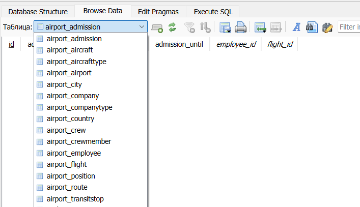
2) Реализовать логику работы API средствами Django REST Framework (используя методы сериализации).
Чтобы настроить REST API с помощью Django REST Framework (DRF), нужно настроить три ключевых компонента: сериализаторы (переводят объекты Django ORM в формат JSON и обратно), представления (обрабатывают HTTP-запросы GET, POST, PUT, DELETE) и маршруты (привязывают URL-адреса к представлениям).
Создам отдельный файл с сериализаторами serializers.py
Сериализатор превращает сложные объекты моделей django в обычный формат json(для отправки клиенту) и наоборот - проверяет входящий json и превращает его обратно в запись базы данных.
При созданиии пойду прям по порядку моделей, чтобы не выдумывать ничего лишнего.
У меня будут универсальные сериализаторы на запись(POST, PUT, PATCH, DELETE) и на чтение (GET).
Будут просто на GET с пометкой Detail.
Будут только на создание с пометкой Create.
После создания сериализаторов приступаем к созданию представлений views.py
Нужно реализовать CRUD-операции для реализации буду использовать generics.
Вот пример для компаний:
class CompanyListView(generics.ListAPIView):
serializer_class = CompanySerializer
queryset = Company.objects.all()
class CompanyCreateView(generics.CreateAPIView):
serializer_class = CompanySerializer
queryset = Company.objects.all()
class CompanyUpdateView(generics.RetrieveUpdateAPIView):
serializer_class = CompanySerializer
queryset = Company.objects.all()
Добавим пути в urls.py
Для CompanyType я бы хотела сократить классы во view с 4 до 2, один класс будет для просмотра + создания, второй - просмотр, удаление и обновление
Я создала 3 типа компаний, далее я эти типы применила при создании самих компаний.
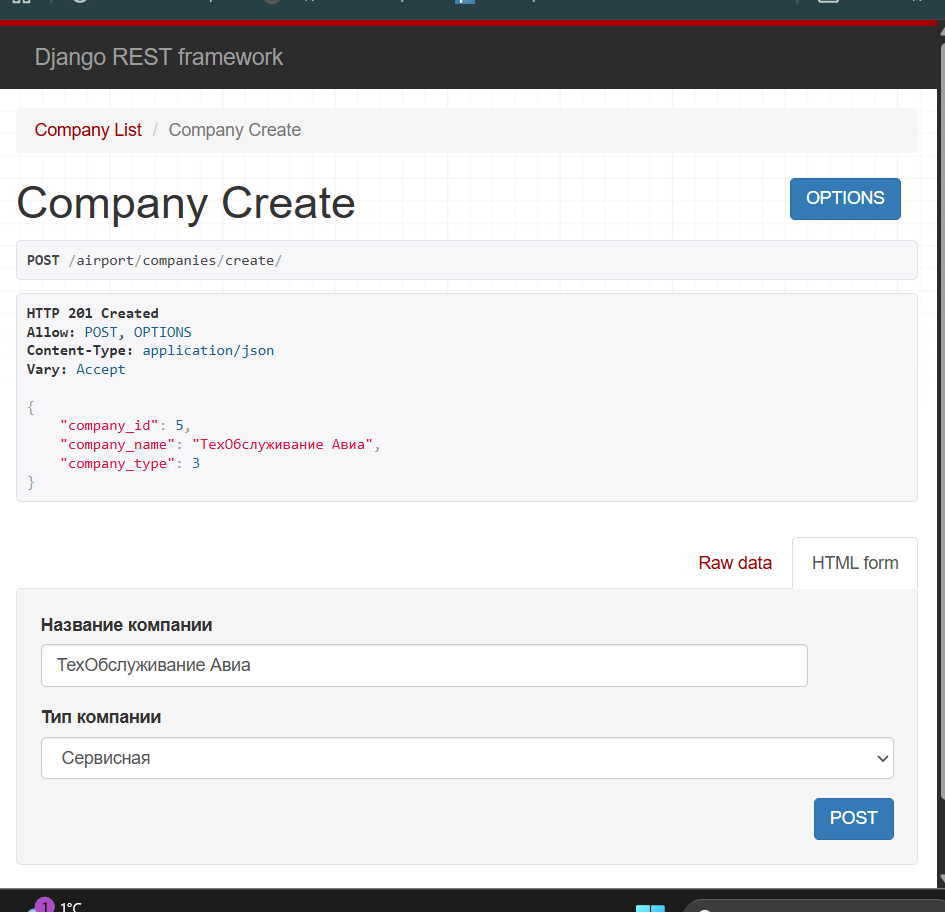
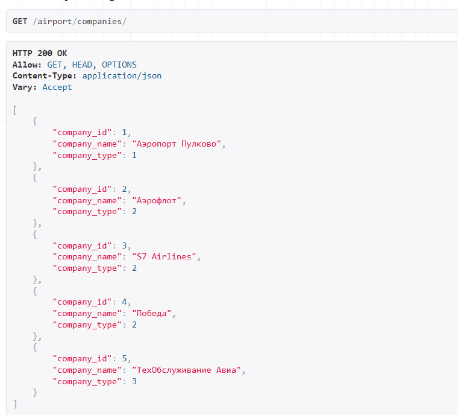
Я реализовала данный пункт.
2) Подключить регистрацию / авторизацию по токенам / вывод информации о текущем пользователе средствами Djoser.
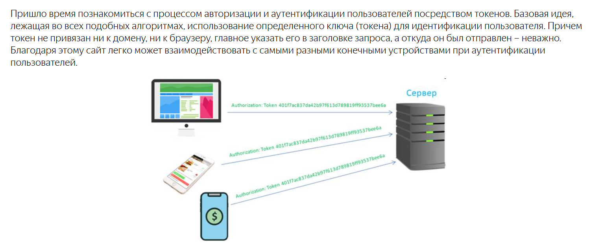
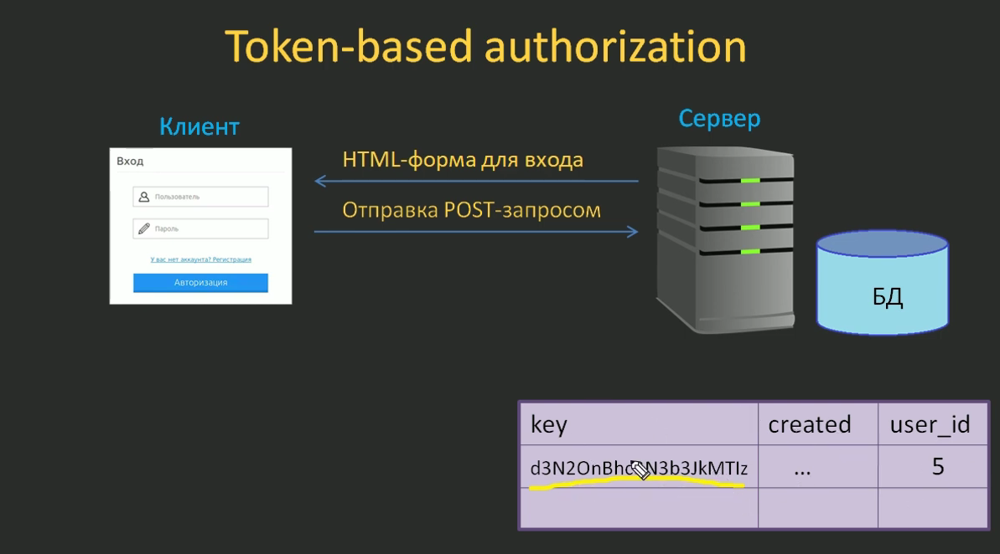
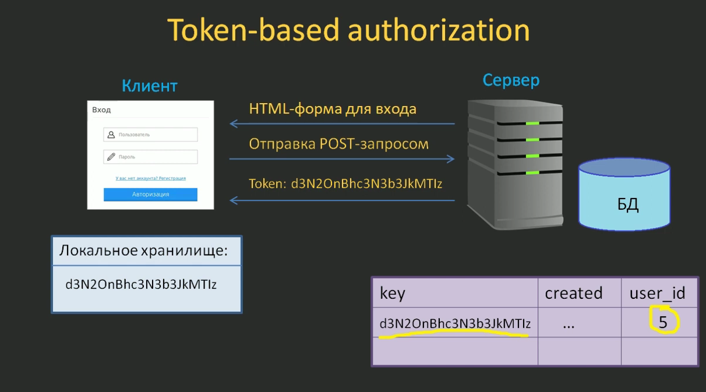
Для реализации буду использовать следующую документацию:
https://djoser.readthedocs.io/en/latest/getting_started.html
- Необходимо установить djoser
pip install -U djoser
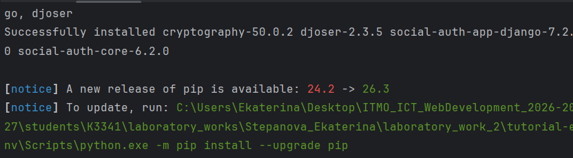
После установки djoser его необходимо непосредственно подключить к нашему проекту.
- В settings.py INSTALLED_APPS прописываем djoser и rest_framework.authtoken(для хранения токенов в бд)
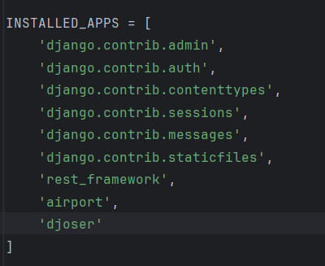
INSTALLED_APPS = [
'django.contrib.admin',
'django.contrib.auth',
'django.contrib.contenttypes',
'django.contrib.sessions',
'django.contrib.messages',
'django.contrib.staticfiles',
'rest_framework',
'rest_framework.authtoken'
'airport',
'djoser'
]
Так как в программе появилась новая модель, необходимо сделать миграцию для нее.
Теперь нужно сделать это прописать необходимые маршруты.(https://djoser.readthedocs.io/en/latest/authentication_backends.html)
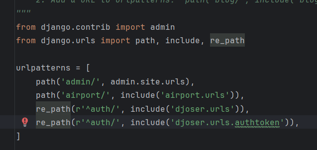
И поледнее, необходимо добавить rest_framework.authentication.TokenAuthentication в Django REST Framework authentication strategies tuple(оно находится в settings.py):
REST_FRAMEWORK = {
'DEFAULT_AUTHENTICATION_CLASSES': (
'rest_framework.authentication.TokenAuthentication',
'rest_framework.authentication.SessionAuthentication',
),
'DEFAULT_PERMISSION_CLASSES': (
'rest_framework.permissions.AllowAny',
),
'DEFAULT_RENDERER_CLASSES': (
'rest_framework.renderers.JSONRenderer',
'rest_framework.renderers.BrowsableAPIRenderer',
),
}
Этот словарь - главная панель управления безопасностью моего API. Он состоит из двух настроек, которые отвечают на 2 разных вопроса: "Кто ты?" и "Что тебе разрешено?".
DEFAULT_AUTHENTICATION_CLASSES (Кто ты?)
Эта настройка объясняет Django REST Framework, какими способами пользователь может доказать, что он вошел в систему:
• TokenAuthentication — учит сервер понимать авторизацию по токенам. Когда ты в Postman отправляешь заголовок Authorization: Token <твой_ключ>, именно этот класс проверяет ключ по базе данных и понимает, какой именно пользователь делает запрос (без этой строчки /auth/users/me/ не заработает).
• SessionAuthentication — сохраняет привычный вход по логину и паролю через сессии и куки браузера. Это нужно, чтобы ты могла пользоваться стандартной админкой Django и встроенным веб-интерфейсом DRF в браузере.
DEFAULT_PERMISSION_CLASSES (Что тебе разрешено?)
Эта настройка задает глобальные права доступа ко всем эндпоинтам по умолчанию:
• AllowAny — разрешает доступ всем пользователям (даже неавторизованным гостям). Мы ставим это значение во время разработки, чтобы ты могла спокойно тестировать свои рейсы, самолеты и запросы без постоянных ошибок доступа (401 Unauthorized).
• Важный нюанс: даже при включенном AllowAny защищенные эндпоинты самого Djoser (например, /auth/users/me/) имеют свои встроенные правила и всё равно потребуют токен. А если перед сдачей работы понадобится закрыть всё API от гостей, достаточно будет поменять AllowAny на IsAuthenticated (доступ только с токеном).
Настройка DEFAULT_RENDERER_CLASSES в словаре REST_FRAMEWORK указывает, в каком формате сервер должен возвращать ответы клиенту (например, в чистом JSON или в виде красивой HTML-страницы в браузере).
Используя Postman
- Запускаем сервер: python manage.py runserver
Я решила поменять базовый маршрут для авторизации и некоторых действий с пользователями, чтобы не путаться на первых парах:
path('api/v1/auth/', include('djoser.urls')),
- Перейдем по этому маршруту
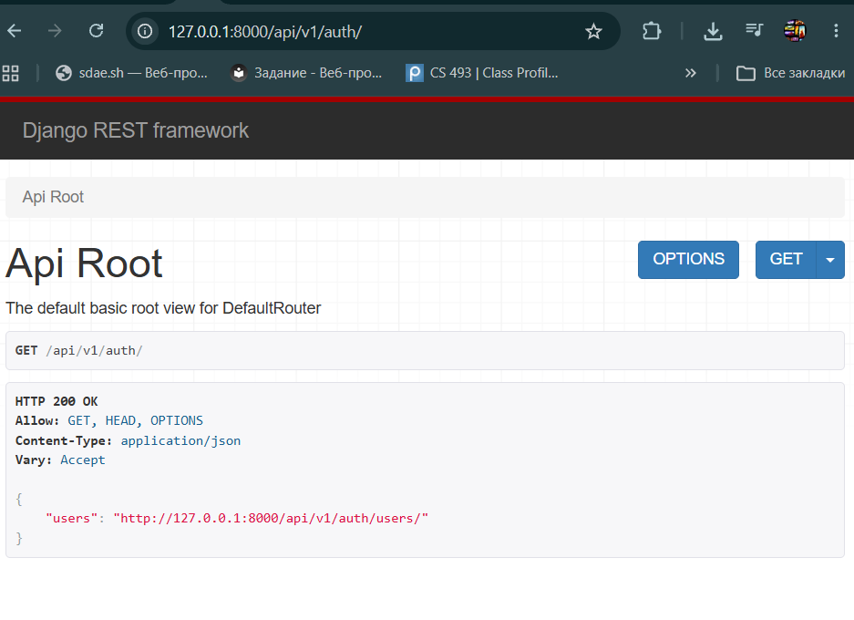
Нам выдали вот такой доступный адрес, перейдем по нему:
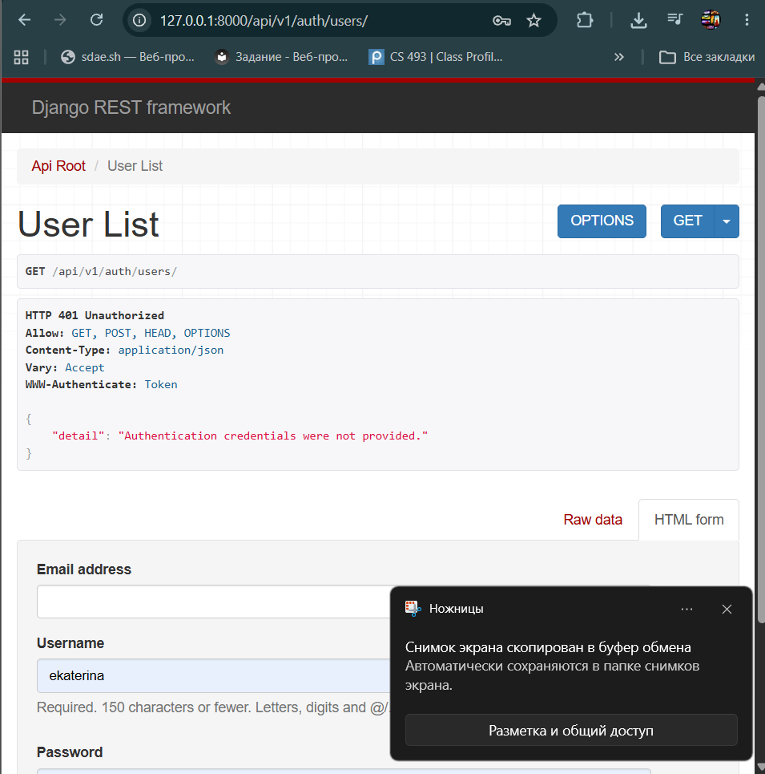
Вот что означают основные элементы на экране:
• HTTP 401 Unauthorized (в сером блоке): Сервер запретил просмотр списка всех пользователей (GET-запрос), так как ты еще не вошла в систему и не передала токен.
• Форма регистрации внизу (Email, Username, Password): Это интерфейс для POST-запроса на регистрацию нового аккаунта — он открыт для всех, поэтому ты можно заполнить поля и нажать кнопку POST, чтобы создать пользователя.
Я попробовала ввести поту, но при post-запросе, сттал ругаться на пароль, придумаю какой-то посложнее.
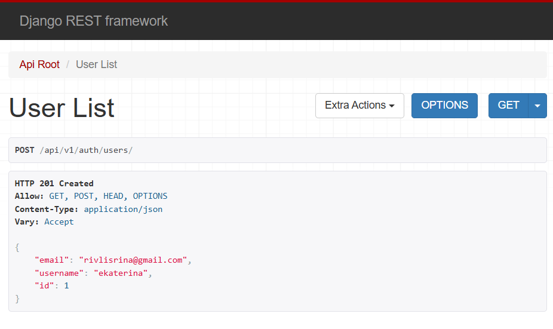
И нам возвращается список всех пользователей, которые зарегистрированы в системе.
Сейчас у нас есть только один пользователь - администратор.
Так вот с помощью пакета djoser мы можем выполнять не только авторизацию, аутентификацию, но и регистрацию пользователей, его удаление, изменение данных и тд.
Т.е. Пакет djoser поддерживает самые разные действия, чтобы узнать какие, мы в документации переходим в раздел BaseEndpoints (https://djoser.readthedocs.io/en/latest/base_endpoints.html)
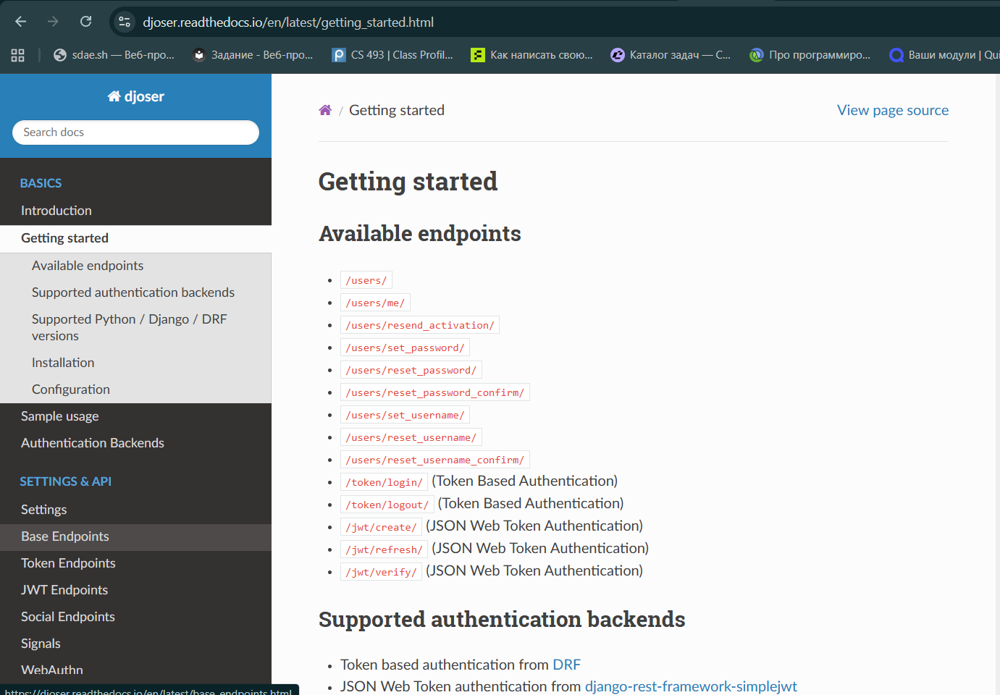
И уже на этой странице подробно описано, например, создание пользователя User Create.
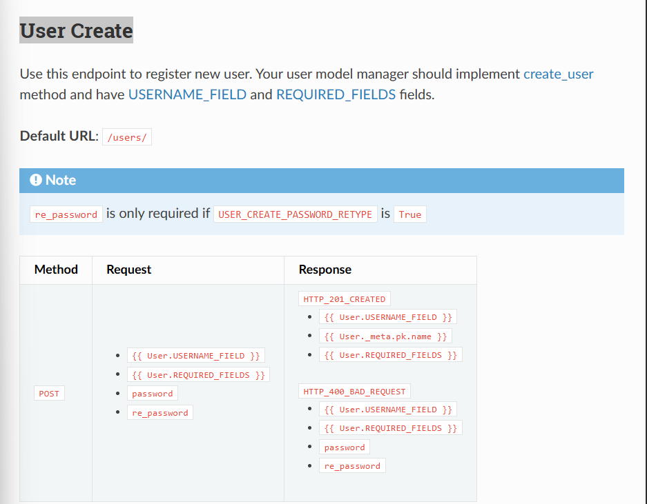
- User Activate - Сделать пользователя активным
- User Delete - удалить пользователя
И так далее, здесь много разных возможностей.
Давайте создадим нового пользователя, используя User Create
Значит, мы по этому адресу /users/ должны отправить post-запрос
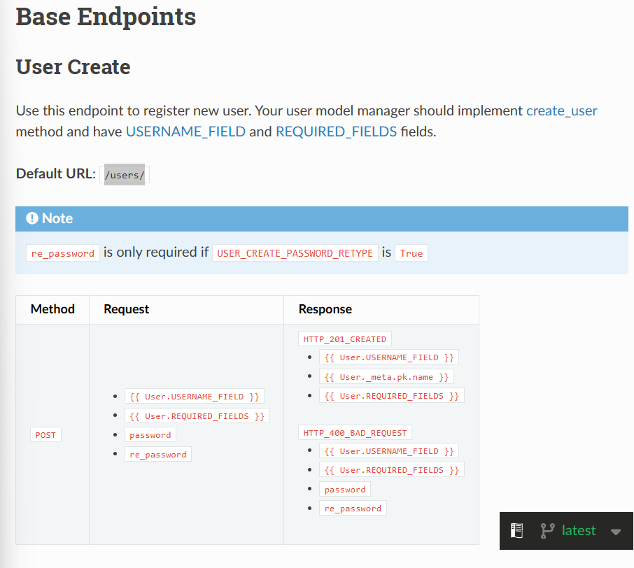
С определенными даннными:
{{ User.USERNAME_FIELD }}
{{ User.REQUIRED_FIELDS }}
password
re_password
Теперь откроем Postman, т.е. мы будем имитировать отправку post-запроса
- нажимаем в приложении на создание нового запроса
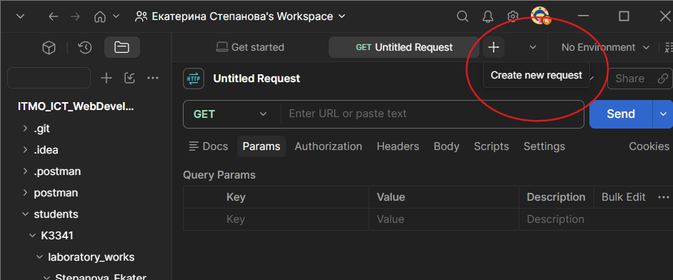
- Вводим базовый адрес + users
http://127.0.0.1:8000/api/v1/auth/users/и выбираем Post-запрос
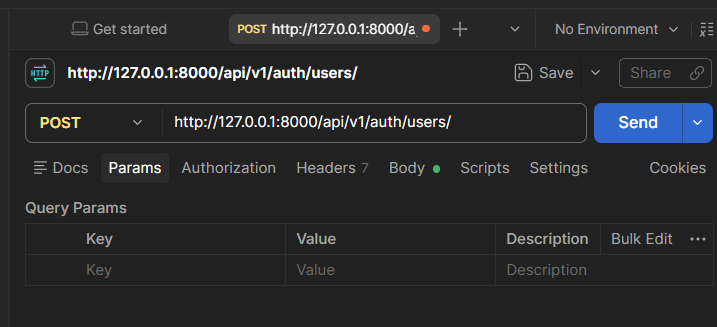
- Нажимаем body и выбираем form-data
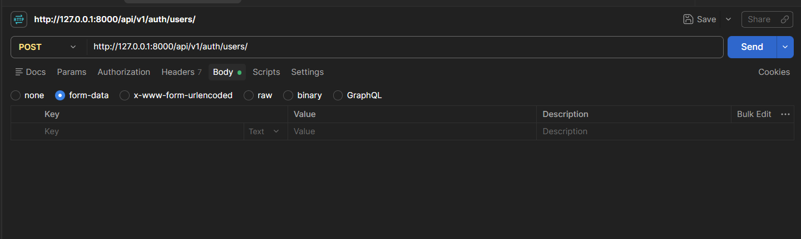
- Заполняем
Что от нас ждет djoser при регистрации пользователя, следуя документации?
• {{ User.USERNAME_FIELD }} — это главное поле для входа. В стандартной модели Django оно называется username.
• {{ User.REQUIRED_FIELDS }} — это список дополнительных обязательных полей при создании суперпользователя. В стандартной модели Django там указан только email (но при обычной регистрации через API Djoser делает его необязательным, если не включена активация по почте).
• password — пароль (пишется буквально так: password).
• re_password — повтор пароля. В синей плашке Note сверху написано: «re_password требуется только если в настройках USER_CREATE_PASSWORD_RETYPE установлено значение True». По умолчанию оно False, поэтому это поле передавать не нужно.
• {{ User._meta.pk.name }} (в столбце Response) — это название первичного ключа (ID) в ответе сервера. В стандартной модели оно называется id.
Итог, можно отправить username, password и (при желании) email

- Регистрируем пользователя - нажимаем send
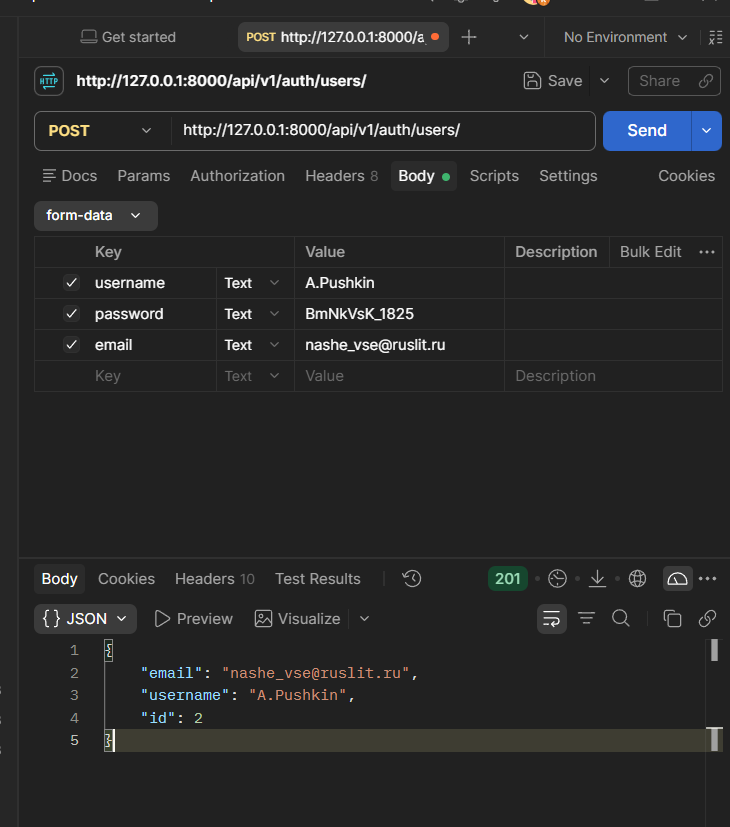
Статус 201, наш пользователь успешно зарегистрирован.
Убедимся в этом, перейдем в браузер и посмотрим на список пользователей.
Через админ-панель:
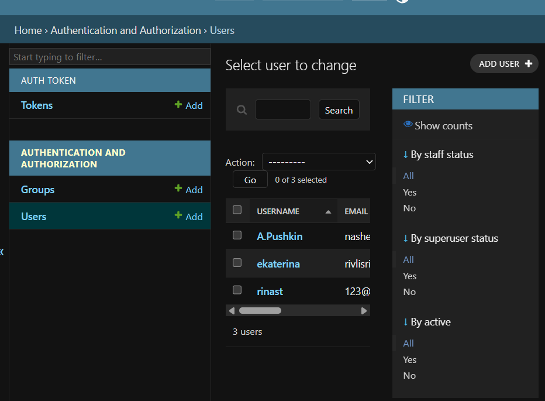
Через Browsable API (Django REST Framework):

Добавим авторизацию с помощью нового пользователя A.Pushkin
Как это сделать описано в документации в разделе Token Endpoints(https://djoser.readthedocs.io/en/latest/token_endpoints.html)
Маршрут, чтобы войти в систему:
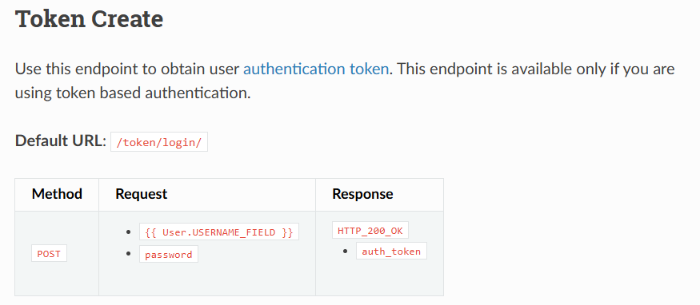
Маршрут, чтобы выйти из системы:
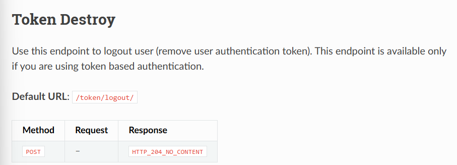
В начале нужно авторизоваться, в postman откроем вкладку нового запроса и пропишем туда этот маршрут http://127.0.0.1:8000/auth/token/login/.
Почему именно такой:
В urls.py мы прописывали re_path(r'^auth/', include('djoser.urls.authtoken')),, эта строчка отвечает за авторизацию по токенам.
А дальше добавляется к этому пути токен и логин.
И тут мы тоже должны отправить post-запрос, в body, нам нужно прописать username и пароль.
Вот для удобства данные созданного пользователя:
A.Pushkin
BmNkVsK_1825
nashe_vse@ruslit.ru
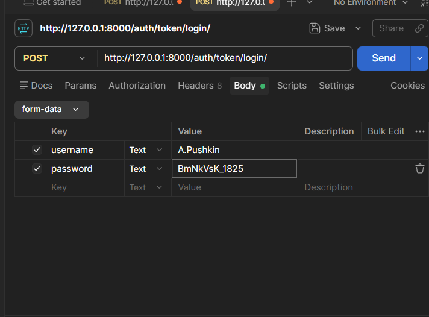
Отправили запрос кнопкой send.
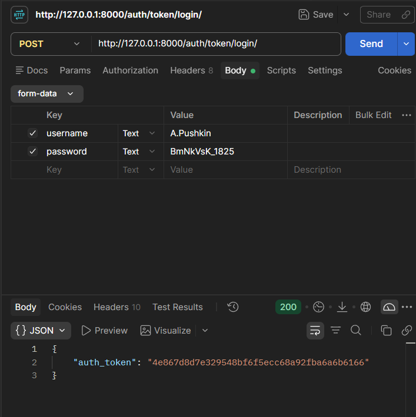
Получили токен: "auth_token": "4e867d8d7e329548bf6f5ecc68a92fba6a6b6166"
С помощью этого токена в последующем будет воспроизводиться аутентификация пользователя.
Чтобы у меня данные о пользователях мог смотреть только авторизованный пользователь изменим клас таким образом:
class EmployeeListView(generics.ListAPIView):
serializer_class = EmployeeSerializer
queryset = Employee.objects.all()
permission_classes = (IsAuthenticated,)
Если я зашла и не авторизовалась:
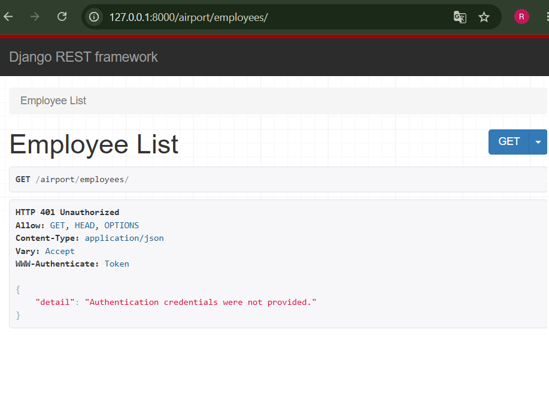
Если я авторизована в данной сессии:
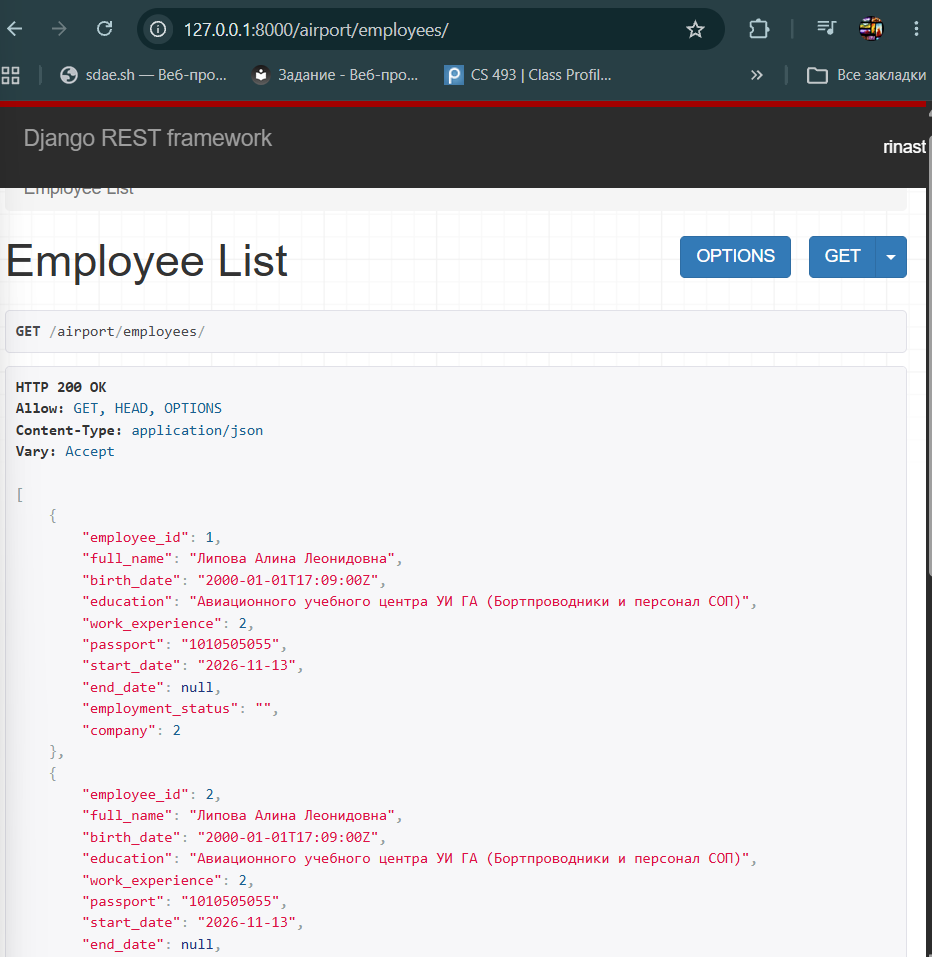
И то же амое будет в Postman, когда мы отправим этот запрос(http://127.0.0.1:8000/airport/employees/):
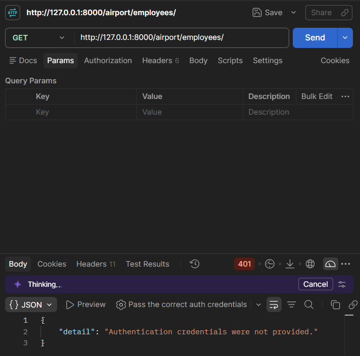
Для того, чтобы сервер нас принял, мы в заголовке(Headers), должны прописать ключ Authorization и указать наш токен:
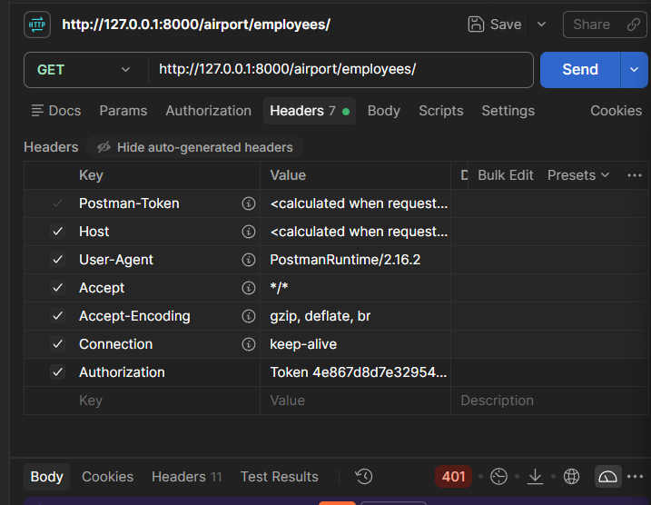
Теперь, если мы сделаем запрос, то должны получить записи.
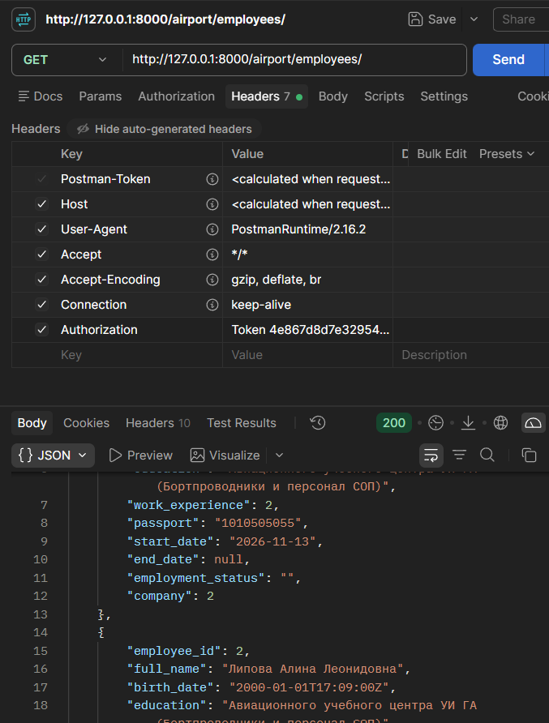
Все верно, сервер воспринял нас как авторизованного пользователя.
Если мы хотим выйти из системы, то вместо login нужно прописать logout.
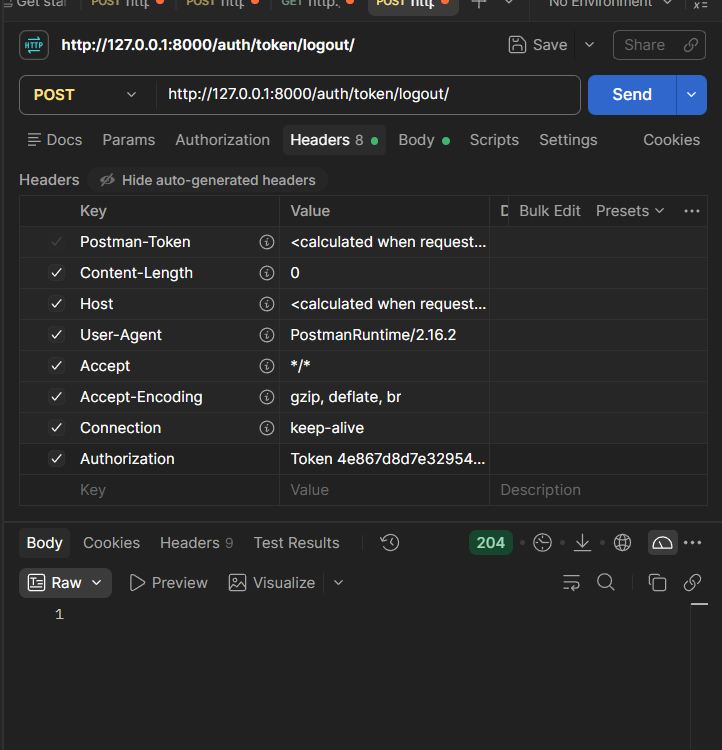
При этом, если мы сейчас попробуем снова сделать запрос и вывести всех работников, то нам выдаст статус недопустимый токен, потому что мы вышли из системы.
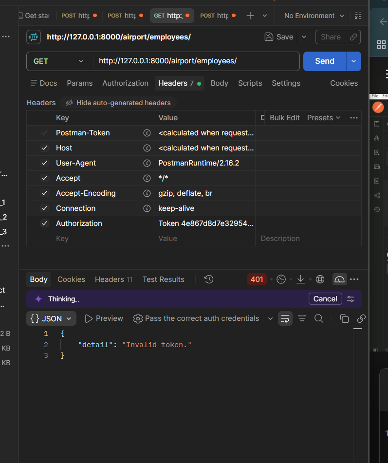
На уровне каждого класса представлений, мы можем конкретизировать способ аутентификации пользователя.
Если хотим только по токену, то в класс нужно добавить вот такую строчку: authentication_classes = (TokenAuthentication,)
Для вывода вссей информации по пользователю:
- Создам сериализатор, который выводит все, кроме пароля
class UserDetailSerializer(serializers.ModelSerializer):
class Meta:
model = Employee
# Выводим всю информацию о пользователе, кроме зашифрованного пароля
exclude = ['password']
# Просмотр полной информации о конкретном пользователе по ID (строго по токену)
class EmployeeDetailView(generics.RetrieveAPIView):
serializer_class = EmployeeSerializer
queryset = Employee.objects.all()
permission_classes = (IsAuthenticated,)
authentication_classes = (TokenAuthentication,)
- Меняем маршрут на
path('employees/<int:pk>/', EmployeeDetailView.as_view()),

Здесь мы зашли по токену.
И последнее вывод информации о текущем пользователе средствами Djoser.
Для вывода информации о текущем пользователе djoser есть уже встроенный готовый эндпоинт /users/me
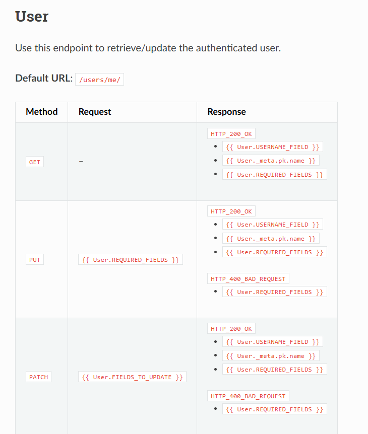
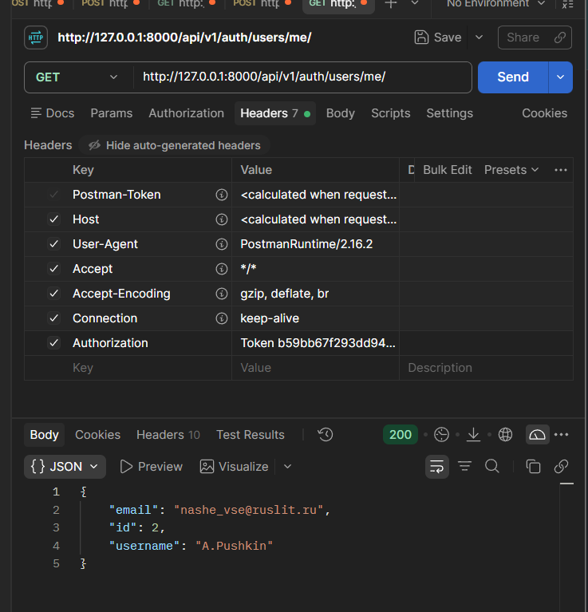